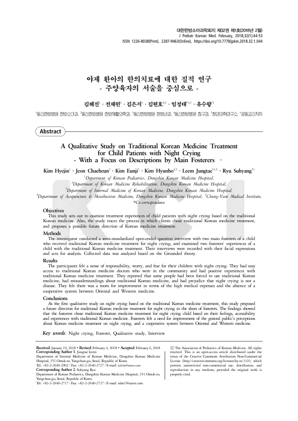

A Qualitative Study on Traditional Korean Medicine Treatment for Child Patients with Night Crying - With a Focus on Descriptions by Main Fosterers –
Kim H, Jeon C, Kim E, Kim H, Leem J, Ryu S
The Journal of Pediatrics of Korean Medicine 32(1):44-53

첫 장 · 오픈액세스First page · open access
논문 소개Summary
야제는 아이가 낮에는 잘 지내다가 밤에 자다 깨어 소리 지르고 우는 것을 말합니다. 한의학은 이를 한증과 열증, 구창중설, 객오의 네 갈래로 나누어 보아 왔고, 양의학에서는 영아산통과 야경증, 악몽이 비슷한 자리에 놓입니다. 부모를 지치게 하지만 병으로 여겨지지 않는 일이 많습니다. 한의 진료 현장에서 흔히 다루는데도 보호자가 왜 한의 치료를 골랐고 무엇을 겪었는지를 물은 연구는 없었습니다. 이 논문은 야제로 한의 치료를 받은 아이의 주 양육자 두 사람을 반구조화된 개방형 질문으로 면담한 질적연구입니다.
보호자들이 먼저 말한 것은 책임감과 걱정, 두려움이었습니다. 아이가 밤마다 우는 상황에서 부모가 겪는 것은 증상 자체보다 그것을 감당해야 한다는 무게였습니다.
한의 치료를 고른 이유로는 접근성이 컸습니다. 지역에 한의사가 가까이 있었고, 치료를 받은 경험이 긍정적이었습니다. 그러나 같은 면담에서 반대 방향의 이야기도 나왔습니다. 주변의 권유에 떠밀려 한의 치료를 쓰게 된 경우가 있었고, 한의학에 대한 오해가 있었으며, 야제는 병이 아니라는 편견도 있었습니다.
개선이 필요하다고 본 것은 두 가지였습니다. 진료비가 비싸다는 점, 그리고 한의와 양의 사이에 협력 체계가 없다는 점입니다. 치료를 긍정적으로 겪은 보호자들이 동시에 이 문제들을 지적했다는 것이 이 연구가 드러낸 자리입니다.
야제를 한의 치료의 관점에서 다룬 첫 질적연구로, 보호자의 자리에서 앞으로의 방향을 제안했습니다. 진료실에서 보이지 않는 것을 드러냈다는 데 값이 있습니다. 치료를 받으러 온 보호자가 무엇을 지고 왔는지, 무엇에 떠밀려 왔는지, 무엇을 불만스러워하면서도 말하지 않는지는 진료 기록에 남지 않기 때문입니다. 다만 면담 참여자가 두 사람이므로 여기서 나온 것은 일반화할 수 있는 결론이 아니라 더 큰 연구가 물어야 할 것들의 목록입니다. 질적연구에서 두 사람은 포화에 이르기 어려운 수이고, 저자들도 이 연구를 첫 시도로 규정했습니다.
Night crying describes an infant who passes the day well but wakes at night screaming and crying. Korean medicine has long divided it into four patterns — cold, heat, oral ulceration with swollen tongue, and fright from strangers — while Western medicine places infantile colic, night terrors and nightmares in the same territory. It wears parents down, yet is often not regarded as an illness. Korean medicine practice encounters it commonly, but no study had asked why caregivers chose that treatment or what they experienced. This paper is a qualitative study interviewing two main fosterers of a child treated with Korean medicine for night crying, using semi-standardised open-ended questions.
What the caregivers spoke of first was a sense of responsibility, worry and fear. What parents live through in this situation is less the symptom than the weight of having to bear it.
Accessibility loomed large among the reasons for choosing Korean medicine: a doctor was close at hand in the community, and the experience of treatment was positive. Yet the same interviews yielded the opposite direction too. Some had been pushed into Korean medicine by those around them; there were misunderstandings about it; and there was the prejudice that night crying is not a disease at all.
Two things were seen as needing improvement: the high cost of care, and the absence of any cooperative system between Korean and Western medicine. That caregivers who experienced the treatment positively raised these same problems is what this study brings into view.
As the first qualitative study of night crying from the standpoint of Korean medicine treatment, it proposes a future direction from where the caregivers stand. Its value lies in bringing into view what the consulting room does not show: what a caregiver carried in with them, what pushed them through the door, and what they remain dissatisfied with without saying so, are things no medical record holds. With two participants, however, what emerges is not a generalisable conclusion but a list of what a larger study should ask — two people being too few for saturation, as the authors themselves acknowledge in framing this as a first attempt.
인용Cite
Kim H, Jeon C, Kim E, Kim H, Leem J, Ryu S. A Qualitative Study on Traditional Korean Medicine Treatment for Child Patients with Night Crying - With a Focus on Descriptions by Main Fosterers –. The Journal of Pediatrics of Korean Medicine. 2018;32(1):44-53. doi:10.7778/jpkm.2018.32.1.044